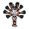

Access to:
North: Bleu Plaza
West: Bleu Street
South: Bleu Sector 7
East: Aymlis Park
Northeast: Bleu Sector 3
Places of interest:
Nouveau Café (Truck No. 2)
| Pokémon | Level | Area | Circumstances | |
|---|---|---|---|---|
|
 |
Rogue Mega Barbaracle | 48 | In the open water area in the middle of the enclosed space | Required Rogue Mega Evolution battle during Main Mission 22: A Rogue Mega Barbaracle. The Barbaracle will occasionally call level 23 Binacle as helpers during the fight. This is a Multi Battle with Lida. Lida uses a level 43 Clawitzer, a level 43 Vanillish, and a level 44 Staryu. |
| Item | Main Mission | Location | Details |
|---|---|---|---|
| Barbaracite | Main Mission 22: A Rogue Mega Barbaracle | Obtained from the Rogue Mega Barbaracle after defeating it |
| Item | Location | Details |
|---|---|---|
| HP Up | On the scaffolding in the southwest | |
| Calcium | On the scaffolding in the southwest | |
| Colorful Screw | On the scaffolding in the southwest | |
| Awakening | Next to the fence overlooking Aymlis Park's waterway | |
| Burn Heal | Near the stairs leading to the waterway | |
| Super Potion | In the southeastern outer corner of the western building complex | |
| Super Potion | In the northeastern outer corner of the western building complex | |
| Rare Candy | "In the underground waterway leading to the courtyard in the western building complex | |
| Repeat Ball | In the northeastern part of the courtyard in the western building complex | |
| Full Restore | On the stairwell in the courtyard in the western building complex | |
| Dawn Stone | On the northeastern part of the roof of the building complex in the northeast | |
| Heal Ball | On the eastern part of the roof of the western building complex | |
| Quick Ball | On the northwestern corner of the roof of the western building complex | |
| Zinc | On the western part of the roof of the western building complex | |
| Colorful Screw | On the western part of the roof of the western building complex | |
| Ultra Ball | On the southwestern corner of the roof of the western building complex | |
| Colorful Screw | On the scaffolding next to Bleu Street | |
| Zinc | On the scaffolding by Bleu Plaza | |
| Iron | On the scaffolding by Bleu Plaza | |
| Colorful Screw | On the scaffolding by Bleu Plaza | |
| Pearl | On the rock southeast of Bleu Plaza |
Nouveau Café (Truck No. 2) is located near the scaffolding next to Bleu Sector 7.
| Drink | Price | Type |
|---|---|---|
| Ember Roast | 250 | Coffee |
| Flamethrower Roast | 250 | Coffee |
| Fire Blast Roast | 250 | Coffee |
| Burn Up Roast | 300 | Coffee |
| Panchamomile Tea | 250 | Tea |
| Wooloolong Tea | 300 | Tea |
| Roserade Tea | 350 | Tea |
| Moomoo Milk | 200 | Other |
| Fresh Water | 100 | Other |
| Sparkling Water | 100 | Other |
A tourist kiosk near the fence overlooking Aymlis Park's waterway sells drinks.
| Item | Price |
|---|---|
| Fresh Water | 200 |
| Soda Pop | 300 |
| Lemonade | 400 |
| Moomoo Milk | 600 |
| Trainer | Party | Notes |
|---|---|---|
| Anguil of DYN4MO | Eelektrik lv.44 Eelektrik lv.44 Eelektrik lv.44 |
During Side Mission 053: The Most Electrifying Eelektrik |
The following Side Missions can be obtained in Bleu Sector 5.
| Side Mission | Giver | Location | Unlock requirement | Rewards |
|---|---|---|---|---|
| Side Mission 053: The Most Electrifying Eelektrik | Anguil | Near Aymlis Park | Defeat Canari during Main Mission 19: Reaching Rank D | 1,800 currency 1x Thunder Stone 1x Calcium |